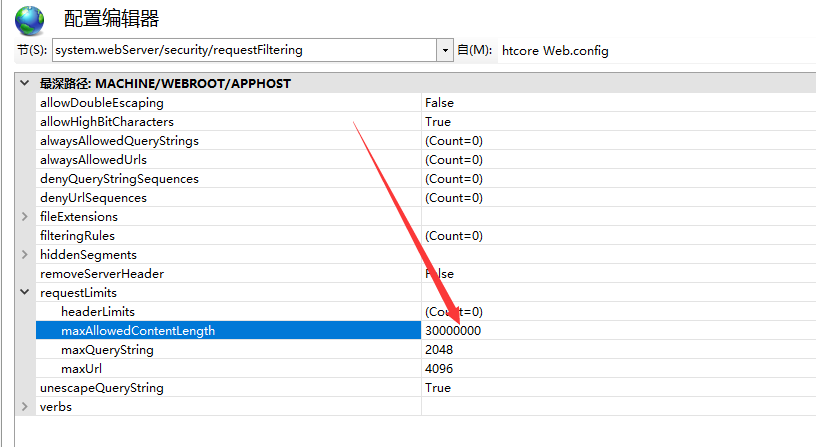
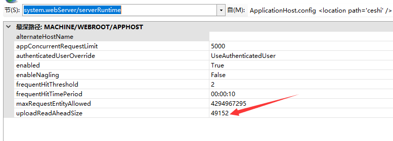

IIS文件上传大小限制30M,C盘中有的IIS_schema.xml文件
C:\Windows\System32\inetsrv\config\schema\但是考虑到安全等问题，而且这个文件默认是只读的，所以不建议直接修改这个配置文件，而应该在iis的管理器里修改：
一、打开某一个网站或者点击根节点，在最下方的“管理”部分，选择“配置编辑器”
然后找到节点system.webServer/security/requestFiltering
将里面的requestlimits下的maxAllowedContentLength的值（原本为30000000，即30M）修改为1024000000，即1G即可。
这样修改直接就能生效，无需重启iis或者服务器。

二、Web.config配置文件调整
system.web 节点下添加
<httpRuntime maxRequestLength="1024000000" enableVersionHeader="false" maxQueryStringLength="3584" executionTimeout="600"/>三、本地上传没问题，但是HTTPS在做图片上传时，就出现了413上传问题，这也是我本次的问题
分析原因：在网上查阅知道了，这是因为https站点限制了上传文件的大小，所以上传的文件出现超时未上传到服务器上。
解决方法：修改IIS上的UploadReadAheadSize值
打开某一个网站或者点击根节点，在最下方的“管理”部分，选择“配置编辑器”，选择“system.webServer/serverRuntime”，可以看到“UploadReadAheadSize”默认值为49152，修改成你所需要的限制大小，这我修改了为1024000000（1G）

再进行上传就没有问题了,帮助到你记得点个推荐，谢谢！